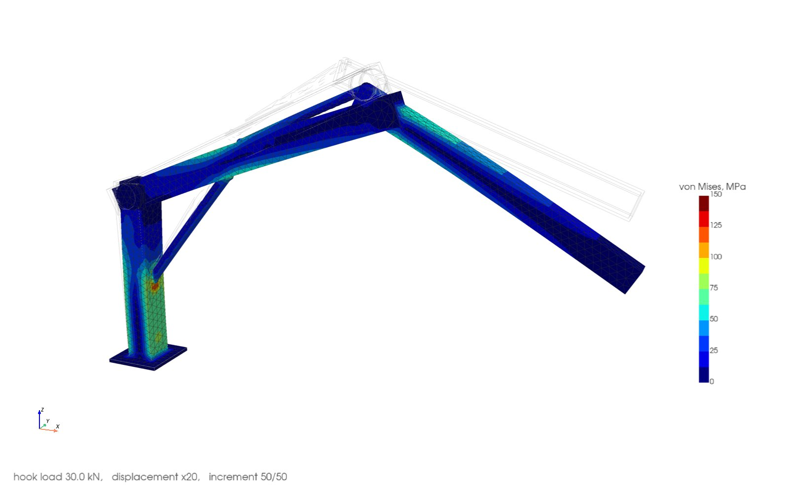
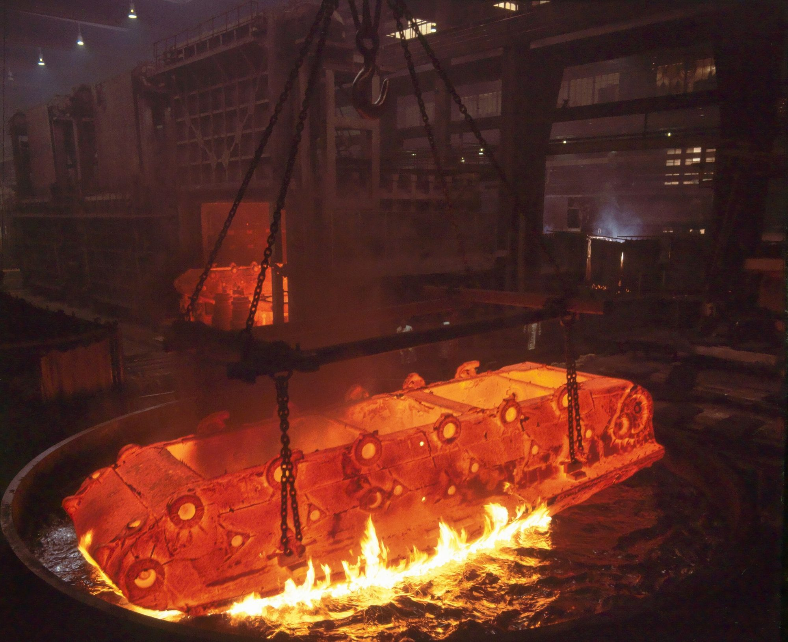
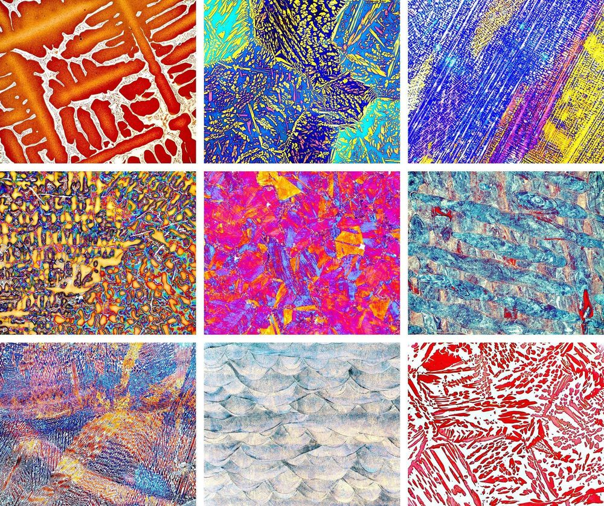
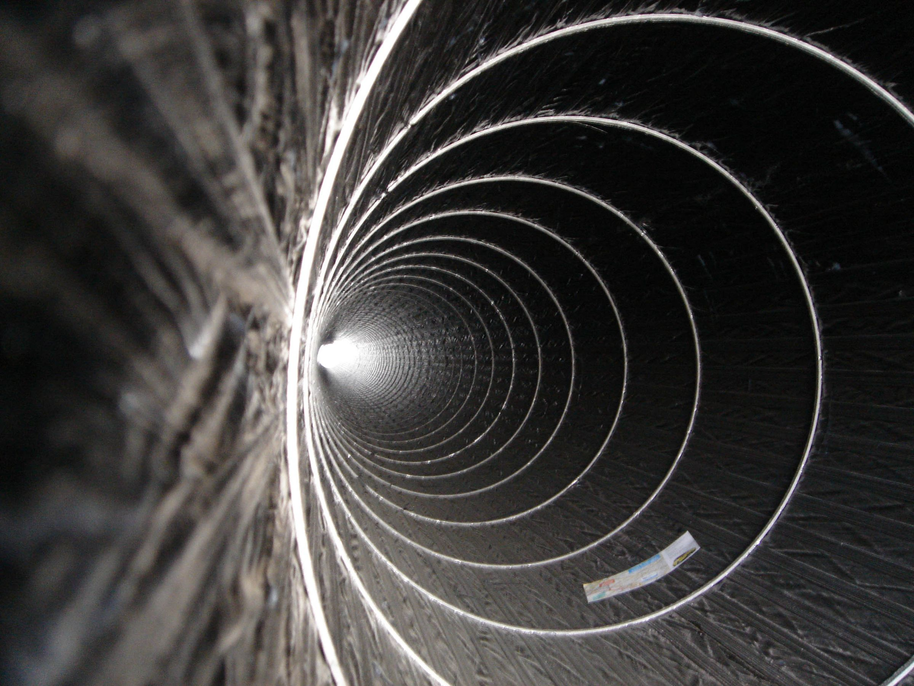

Coupled thermo-mechanics
Temperature and displacement solved together, or in sequence with the field passed on. Benchmarked on a constrained plate, a bimetal strip and the Satoh test.
SiM2Pro is the workbench. WeldPro, HTPro, MetaPro and MatPro each add one field of physics, with their own dialogs and their own checks.
A desktop studio over a typed Python model: import or sketch the geometry, mesh it, set up the study, solve with CalculiX or the built-in solver, review the results. Every action is recorded as a script, and an AI agent can drive the whole thing.
See the platform


Goldak, Gaussian, conical and cylindrical heat sources moving along a weld path. Filler is added as the torch passes, and the temperatures drive the stress steps.
See WeldPro
Quenching and carburizing of steel parts: film coefficients from thermocouples, phases on cooling, residual stress and distortion.
See HTPro
CCT diagrams of low alloy steels from composition and grain size, critical temperatures, and the analysis of dilatometer curves.
See MetaPro
Unit-cell micromechanics, classical lamination theory, failure criteria and progressive failure, as one product.
See MatPro
Temperature and displacement solved together, or in sequence with the field passed on. Benchmarked on a constrained plate, a bimetal strip and the Satoh test.
Cracking in tension and crushing in compression, tested at a material point, with a reinforced beam in four-point bending as the worked example.
SiM2Pro does not replace these tools. It prepares their input and reads the answer back. Two are ready; the CALPHAD interface is in development.
Writes a runnable steady incompressible case from your mesh and reads FoamFile dictionaries back. OpenFOAM does the solving.
How it worksWill bring equilibrium data from a CALPHAD solver into the metallurgy and heat treatment studies. Not released yet.
See MetaProServes the Model Context Protocol, so an outside AI agent can build and run a study through typed tools. SiM2Pro calls no AI model itself.
How to connect oneThe part, the process, the question. We reply with what a study would take and what it would show.